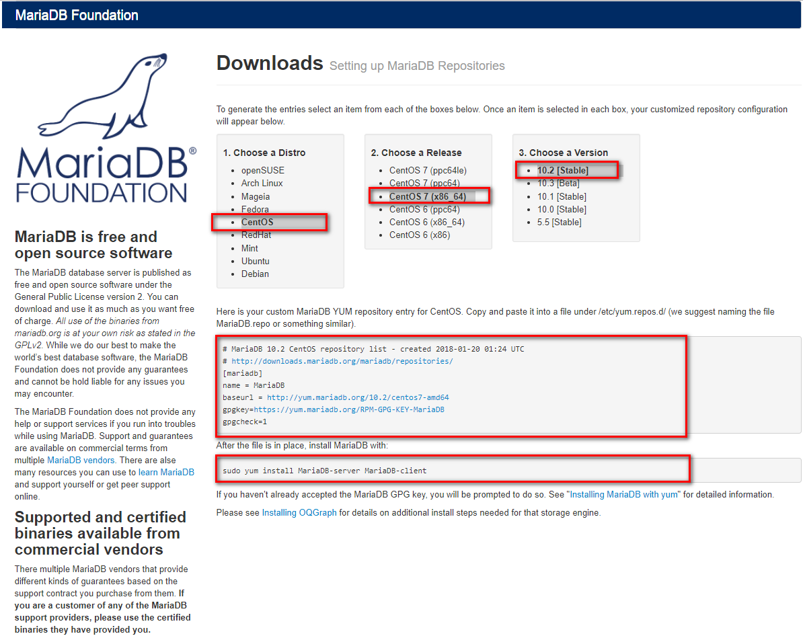

9.3. mysql安装¶
9.3.1. yum安装¶
yum安装是三种安装方式最简单的方式：
[root@7 ~]# yum info mariadb-server
[root@7 ~]# yum install mariadb
上面方式可能下载的版本比较旧，如果想安装最新稳定版本，去这里选择 Maraidb-repo,按照下图提示操作，添加repo文件即可。
[root@7 ~]# cd /etc/yum.repos.d/
[root@7 yum.repos.d]# ls
bak cdrom.repo epel-7.repo
[root@7 yum.repos.d]# vim mariadb.repo
[root@7 yum.repos.d]# cat mariadb.repo
# MariaDB 10.2 CentOS repository list - created 2018-01-20 01:29 UTC
# http://downloads.mariadb.org/mariadb/repositories/
[mariadb]
name = MariaDB
baseurl = http://yum.mariadb.org/10.2/centos7-amd64
gpgkey=https://yum.mariadb.org/RPM-GPG-KEY-MariaDB
gpgcheck=1
[root@7 yum.repos.d]# sudo yum install MariaDB-server MariaDB-client
9.3.2. 二进制安装¶
9.3.2.1. 原有版本的卸载¶
[root@7 ~]# sudo yum remove MariaDB-server MariaDB-client
9.3.2.2. 下载数据¶
下载地址.

Note
centos7的下载systemd的，centos6下载第二个。
[root@7 src]# cd /usr/src
[root@7 src]# wget https://downloads.mariadb.org/interstitial/mariadb-10.2.12/bintar-linux-systemd-x86_64/mariadb-10.2.12-linux-systemd-x86_64.tar.gz/from/http%3A/.edu.cn/mariadb/ \
-O mariadb-10.2.12-linux-systemd-x86_64.tar.gz
[root@7 src]# tar xf mariadb-10.2.12-linux-systemd-x86_64.tar.gz -C /usr/local/
9.3.2.3. 创建用户和组¶
[root@7 src]# groupadd -g 27 -r mysql
[root@7 src]# useradd -r -u 27 -g mysql mysql -s /sbin/nologin
9.3.2.4. 安装¶
[root@7 src]# cd /usr/local/ [root@7 local]# ls bin etc games include lib lib64 libexec mariadb-10.2.12-linux-systemd-x86_64 sbin share src [root@7 local]# ln -s mariadb-10.2.12-linux-systemd-x86_64 mysql [root@7 local]# chown -R mysql:mysql mysql/ [root@7 local]# echo ‘PATH=/usr/local/bin:$PATH’ >> /etc/profile.d/mysql.sh [root@7 local]# cat /etc/profile.d/mysql.sh PATH=/usr/local/bin:$PATH [root@7 local]# source /etc/profile.d/mysql.sh
9.3.2.5. 存储设备准备¶
Note
数据库文件占用空间很大的，建议放到lvm上面去，容易扩展，避免导致根分区占用过大。
[root@7 local]# lsblk
NAME MAJ:MIN RM SIZE RO TYPE MOUNTPOINT
sda 8:0 0 200G 0 disk
├─sda1 8:1 0 1G 0 part /boot
└─sda2 8:2 0 199G 0 part
├─centos-root 253:0 0 50G 0 lvm /
├─centos-swap 253:1 0 2G 0 lvm [SWAP]
└─centos-home 253:2 0 147G 0 lvm /home
sr0 11:0 1 8.1G 0 rom /mnt/cdrom
[root@7 local]# for i in `find /sys/devices/ -name scan` ; do echo "- - -" > $i ; done;
[root@7 local]# lsblk
NAME MAJ:MIN RM SIZE RO TYPE MOUNTPOINT
sda 8:0 0 200G 0 disk
├─sda1 8:1 0 1G 0 part /boot
└─sda2 8:2 0 199G 0 part
├─centos-root 253:0 0 50G 0 lvm /
├─centos-swap 253:1 0 2G 0 lvm [SWAP]
└─centos-home 253:2 0 147G 0 lvm /home
sdb 8:16 0 20G 0 disk
sr0 11:0 1 8.1G 0 rom /mnt/cdrom
[root@7 local]# fdisk /dev/sdb
Welcome to fdisk (util-linux 2.23.2).
Changes will remain in memory only, until you decide to write them.
Be careful before using the write command.
Device does not contain a recognized partition table
Building a new DOS disklabel with disk identifier 0x489a4915.
Command (m for help): n
Partition type:
p primary (0 primary, 0 extended, 4 free)
e extended
Select (default p): p
Partition number (1-4, default 1):
First sector (2048-41943039, default 2048):
Using default value 2048
Last sector, +sectors or +size{K,M,G} (2048-41943039, default 41943039): +5G
Partition 1 of type Linux and of size 5 GiB is set
Command (m for help): t
Selected partition 1
Hex code (type L to list all codes): 8e
Changed type of partition 'Linux' to 'Linux LVM'
Command (m for help): p
Disk /dev/sdb: 21.5 GB, 21474836480 bytes, 41943040 sectors
Units = sectors of 1 * 512 = 512 bytes
Sector size (logical/physical): 512 bytes / 512 bytes
I/O size (minimum/optimal): 512 bytes / 512 bytes
Disk label type: dos
Disk identifier: 0x489a4915
Device Boot Start End Blocks Id System
/dev/sdb1 2048 10487807 5242880 8e Linux LVM
Command (m for help): w
The partition table has been altered!
Calling ioctl() to re-read partition table.
Syncing disks.
[root@7 local]# lsblk
NAME MAJ:MIN RM SIZE RO TYPE MOUNTPOINT
sda 8:0 0 200G 0 disk
├─sda1 8:1 0 1G 0 part /boot
└─sda2 8:2 0 199G 0 part
├─centos-root 253:0 0 50G 0 lvm /
├─centos-swap 253:1 0 2G 0 lvm [SWAP]
└─centos-home 253:2 0 147G 0 lvm /home
sdb 8:16 0 20G 0 disk
└─sdb1 8:17 0 5G 0 part
sr0 11:0 1 8.1G 0 rom /mnt/cdrom
[root@7 local]# pvcreate /dev/sdb1
Physical volume "/dev/sdb1" successfully created.
[root@7 local]# vgcreate vg_data /dev/sdb1
Volume group "vg_data" successfully created
[root@7 local]# lvcreate -n lv_mysql -l 100%FREE vg_data
Logical volume "lv_mysql" created.
[root@7 local]# mkfs.xfs /dev/mapper/vg_data-lv_mysql
[root@7 local]# mkdir /data/mysql -pv
mkdir: created directory ‘/data’
mkdir: created directory ‘/data/mysql’
[root@7 local]# mount /dev/mapper/vg_data-lv_mysql /data/mysql/
[root@7 local]# tail -n /etc/mtab
tail: /etc/mtab: invalid number of lines
[root@7 local]# tail -n 1 /etc/mtab
/dev/mapper/vg_data-lv_mysql /data/mysql xfs rw,seclabel,relatime,attr2,inode64,noquota 0 0
[root@7 local]# tail -n 1 /etc/mtab >> /etc/fstab
[root@7 local]# cd /data/
[root@7 data]# ll
total 0
drwxr-xr-x. 2 root root 6 Jan 20 14:00 mysql
[root@7 data]# chown mysql.mysql mysql/
[root@7 data]# ll
total 0
drwxr-xr-x. 2 mysql mysql 6 Jan 20 14:00 mysql
[root@7 data]# chmod -R 770 mysql/
9.3.2.6. 安装并配置¶
[root@7 data]# chmod -R 770 mysql/
[root@7 data]# cd /usr/local/mysql/
[root@7 mysql]# ll
[root@7 mysql]# ./scripts/mysql_install_db --datadir=/data/mysql --user=mysql # 安装库
[root@7 mysql]# cp support-files/my-huge.cnf /etc/my.conf
[root@7 mysql]# ll /etc/my.conf
-rw-r--r--. 1 root root 4914 Jan 20 14:19 /etc/my.conf
[root@7 mysql]# vim /etc/my.conf
# 添加如下项到[mysqld]的下一行
datadir = /data/mysql
9.3.2.7. 启动服务¶
[root@7 mysql]# cp support-files/mysql.server /etc/rc.d/init.d/mysqld
[root@centos7 mysql]# vim /etc/rc.d/init.d/mysqld
# 找到basedir行，修改如下内容
basedir=/usr/local/mysql
datadir=/data/mysqldb
[root@centos7 mysql]# chkconfig --add mysqld
[root@centos7 mysql]# chkconfig mysqld on
[root@centos7 mysql]# mysql
Welcome to the MariaDB monitor. Commands end with ; or \g.
Your MariaDB connection id is 9
Server version: 10.2.12-MariaDB MariaDB Server
Copyright (c) 2000, 2017, Oracle, MariaDB Corporation Ab and others.
Type 'help;' or '\h' for help. Type '\c' to clear the current input statement.
MariaDB [(none)]>
9.3.2.8. 数据库安全安装设置¶
[root@centos7 mysql]# mysql_secure_installation
NOTE: RUNNING ALL PARTS OF THIS SCRIPT IS RECOMMENDED FOR ALL MariaDB
SERVERS IN PRODUCTION USE! PLEASE READ EACH STEP CAREFULLY!
In order to log into MariaDB to secure it, we'll need the current
password for the root user. If you've just installed MariaDB, and
you haven't set the root password yet, the password will be blank,
so you should just press enter here.
Enter current password for root (enter for none): # 没有密码就直接回车，有的话就输入
OK, successfully used password, moving on...
Setting the root password ensures that nobody can log into the MariaDB
root user without the proper authorisation.
Set root password? [Y/n] y
New password:
Re-enter new password:
Password updated successfully!
Reloading privilege tables..
... Success!
By default, a MariaDB installation has an anonymous user, allowing anyone
to log into MariaDB without having to have a user account created for
them. This is intended only for testing, and to make the installation
go a bit smoother. You should remove them before moving into a
production environment.
Remove anonymous users? [Y/n] y
... Success!
Normally, root should only be allowed to connect from 'localhost'. This
ensures that someone cannot guess at the root password from the network.
Disallow root login remotely? [Y/n] y
... Success!
By default, MariaDB comes with a database named 'test' that anyone can
access. This is also intended only for testing, and should be removed
before moving into a production environment.
Remove test database and access to it? [Y/n] y
- Dropping test database...
... Success!
- Removing privileges on test database...
... Success!
Reloading the privilege tables will ensure that all changes made so far
will take effect immediately.
Reload privilege tables now? [Y/n] y
... Success!
Cleaning up...
All done! If you've completed all of the above steps, your MariaDB
installation should now be secure.
Thanks for using MariaDB!
9.3.3. 源码安装¶
# 下载文件
wget https://downloads.mariadb.org/interstitial/mariadb-10.2.12/bintar-linux-systemd-x86_64/mariadb-10.2.12-linux-systemd-x86_64.tar.gz/from/http%3A//mirrors.tuna.tsinghua.edu.cn/mariadb/ \
-O mariadb-10.2.12-linux-systemd-x86_64.tar.gz
# 解压
[root@centos151 ~]# tar xf mariadb-10.2.12.tar.gz
[root@centos151 ~]# cd mariadb-10.2.12/
[root@centos151 mariadb-10.2.12]#
[root@centos151 bin]# cmake . \
-DCMAKE_INSTALL_PREFIX=/app/mysql \
-DMYSQL_DATADIR=/mysqldb/ \
-DSYSCONFDIR=/etc \
-DMYSQL_USER=mysql \
-DWITH_INNOBASE_STORAGE_ENGINE=1 \
-DWITH_ARCHIVE_STORAGE_ENGINE=1 \
-DWITH_BLACKHOLE_STORAGE_ENGINE=1 \
-DWITH_READLINE=1 \
-DWITH_SSL=system \
-DWITH_ZLIB=system \
-DWITH_LIBWRAP=0 \
-DMYSQL_UNIX_ADDR=/app/mysql/mysql.sock \
-DDEFAULT_CHARSET=utf8 \
-DDEFAULT_COLLATION=utf8_general_ci \
-DENABLED_LOCAL_INFILE=1 \
-DWITH_PARTITION_STORAGE_ENGINE=1 \
-DWITH_DEBUG=0 \
-DWITHOUT_MROONGA_STORAGE_ENGINE=1
[root@centos151 mariadb-10.2.12]# make && make install
[root@centos151 mariadb-10.2.12]# echo 'PATH=/app/mysql/bin:$PATH' > /etc/profile.d/mysql.sh
[root@centos151 mariadb-10.2.12]# source /etc/profile.d/mysql.sh
[root@centos151 mariadb-10.2.12]# cd /app/mysql
[root@centos151 mysql]# scripts/mysql_install_db --basedir=/app/mysql --datadir=/app/mysql/data --user=mysql
[root@centos151 mysql]# cp support-files/my-huge.cnf /etc/my.cnf
[root@centos151 mysql]# vim /etc/my.cnf
# 添加如下行到mysqld片段内部
basedir=/app/mysql
datadir=/app/mysql/data
[root@centos151 mysql]# chown mysql.mysql /app/mysql/ -R
[root@centos151 mysql]# chkconfig --add mysql
[root@centos151 init.d]# service mysql restart